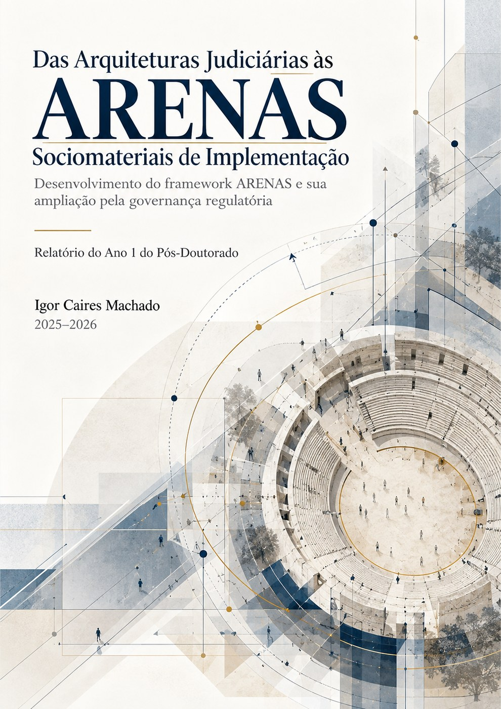
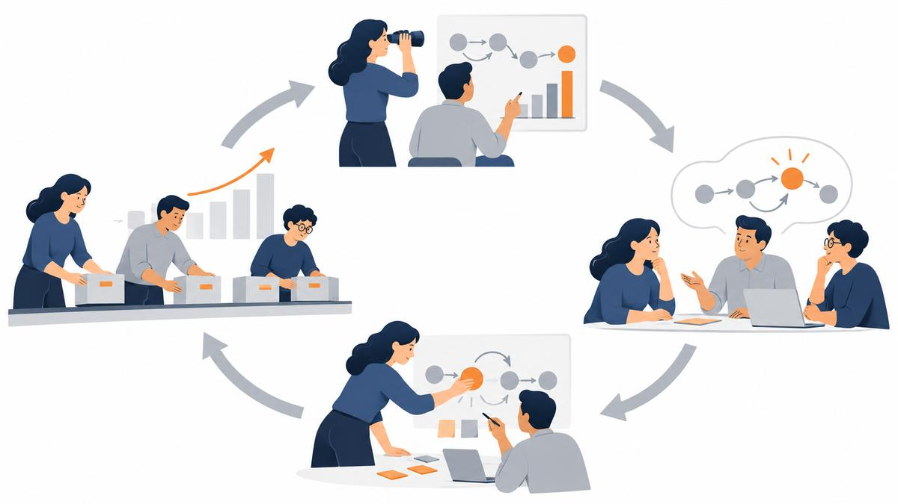

IV Congresso Científico · Anhanguera Asa Norte
Da decisão pública à capacidade de entrega
Igor Caires Machado
Curso de Administração · 07 de outubro de 2026
Trajetória
UFBA · 2007
Graduação em Arquitetura e Urbanismo
TJBA
Liderança administrativa no Tribunal de Justiça da Bahia
UCES · 2024
Doutorado em Ciências Empresariais e Sociais, Buenos Aires
CNJ
Analista Judiciário no Conselho Nacional de Justiça
ENAJU
Coordenação de Desenvolvimento Educacional, Pesquisa e Inovação
ENAP · 2025–2026
Pós-doutorado em Governança e Avaliação de Políticas Públicas
Ponto de partida
A norma está publicada. O orçamento existe. O cidadão chega e não encontra a fila certa, a sala adequada ou a informação de que precisa.
Onde a política pública acontece?
A tese desta palestra
1
A implementação acontece em lugares concretos: balcões, sistemas, filas e formulários.
2
Esses lugares podem ser lidos e redesenhados com método.
3
A pesquisa empírica dá ao administrador essa capacidade.
Papel do administrador
1 · Decisão pública
2 · Capacidade organizacional
3 · Entrega ao cidadão
O administrador coordena recursos, pessoas, rotinas, evidências e adaptações.
Implementação
A distância entre o que se decide em Washington e o que acontece em Oakland.
A política real é produzida na linha de frente, sob pressão de demanda e escassez de recursos.
Organização, discricionariedade e condições institucionais moldam a ação pública.
É nesse intervalo que o administrador trabalha.
Implementação
Prescrições institucionais precisam assumir formas concretas em práticas situadas.
normas
processos
sistemas
espaços
rotinas
decisões de linha de frente
Traduzir envolve interpretação, adaptação e coordenação. Por isso a mesma política gera experiências diferentes em unidades diferentes.
Onde a política acontece
Balcões
Salas de atendimento
Formulários
Sistemas
Filas
Interfaces
Corredores
Plataformas
Nesses arranjos, a norma vira prática, o trabalho se organiza e o cidadão forma sua experiência com o Estado.
O que a pesquisa mostra
| Frente de estudo | O que indicou | Estágio |
|---|---|---|
| Política judiciária | Termos de infraestrutura física ausentes dos núcleos temáticos da literatura | Resultado reproduzível |
| Implementação | Proporção muito baixa de trabalhos que tratam o espaço como variável ativa | Preliminar |
| Evidências empíricas | Evidência densa só no trabalho dos servidores, com lacunas nas demais dimensões | Preliminar |
| Sociomaterialidade | Ligação escassa com o espaço dos serviços públicos | Preliminar |

Pesquisa de pós-doutorado · ENAP
Desenvolvimento do framework ARENAS e sua ampliação pela governança regulatória.
Linha de Governança e práticas de avaliação de políticas públicas. Supervisão da Prof.ª Dr.ª Regina Luna Santos de Souza.
Conceito central · Pesquisa de pós-doutorado, ENAP
Uma arena sociomaterial de implementação é uma configuração situada de atores, prescrições institucionais, espaços, artefatos, tecnologias e infraestruturas por meio da qual uma política pública é interpretada, executada, negociada e experimentada.
Um prédio pode conter várias arenas. Uma arena pode atravessar prédios, plataformas e documentos.
Framework ARENAS
Profissionais, cidadãos, gestores, intermediários
Normas, regras, procedimentos, critérios de elegibilidade
Edifícios, salas, balcões, mobiliário, documentos
Plataformas, sistemas, formulários, sinalização
Esperar, circular, atender, decidir, adaptar
Um componente isolado não forma uma arena. O objeto de análise é o entrelaçamento.
Como o espaço participa
| Mecanismo | Pergunta | Exemplo |
|---|---|---|
| M1 Instrumentação | Como a norma vira arranjo concreto? | Resolução de acessibilidade que vira, ou não, rampa e sinalização tátil |
| M2 Mediação do trabalho | Como o arranjo organiza o trabalho? | Processos empilhados no corredor porque o arquivo fica em outro andar |
| M3 Mediação da experiência | Como o lugar afeta a percepção de tratamento justo? | Bancada elevada na sala de audiência reforça a distância institucional |
| M4 Legibilidade | A instituição é compreensível para quem chega? | Tribunal sem sinalização obriga o cidadão a perguntar várias vezes |
| M5 Aprendizagem | As fricções chegam a quem decide? | Erros recorrentes do sistema eletrônico nunca notificados à gestão |
Um achado para o gestor
Proposição a testar
Quando as transações rotineiras migram para o digital, o prédio recebe menos pessoas. Os atendimentos que permanecem presenciais tendem a exigir mais coordenação, proteção e infraestrutura.
Consequência: a ocupação média perde força como indicador de valor público.
Do conceito à prática
A
Arranjo espacial
R
Rotinas de trabalho
E
Experiência
N
Navegabilidade
A
Aprendizagem
S
Sociomaterialidade
Observar
Diagnosticar
Redesenhar
Testar e avaliar
Aprender
Protótipo com baralho de 24 cartas, checklist bilíngue e ciclo de aplicação em cinco passos.
Exercício com a turma
O fluxo foi redesenhado, a meta foi definida e a equipe foi comunicada. Após três meses, o tempo de atendimento pouco mudou. Onde investigar?
A distribuição de pessoas e recursos mudou?
O trabalho real seguiu o fluxo prescrito?
Usuários e equipe compreenderam a mudança?
O percurso ficou mais claro?
As falhas voltaram para quem decide?
Pesquisa e carreira
Enxergar além do sintoma
Organizar a investigação
Sustentar decisões
Produzir autoridade técnica

A experiência profissional ganha força quando pode ser descrita, analisada e comunicada com método.
Pesquisa e carreira
1
Que problema se repete no seu trabalho?
2
Anote casos, fluxos, reclamações e improvisos.
3
Use os dados administrativos que já existem.
4
Transforme o achado em artigo, relatório ou proposta.
Quem pesquisa o próprio trabalho decide melhor e se diferencia na carreira.
Um campo para a Administração
Governança
Produtividade
Acessibilidade
IA e dados
Educação judicial
Experiência do usuário
Muitos temas do Judiciário são problemas de gestão, pessoas, dados, aprendizagem e entrega de serviço.
Rigor
Proposição
Evidência preliminar
Manuscrito
Aceite
Publicação
Hoje o ARENAS é uma formulação teórica fundamentada. O segundo ano abre o teste empírico das proposições e a validação dos instrumentos.
Síntese
1
Como a política foi traduzida?
2
Que arena a implementa?
3
Que evidências mostram o funcionamento real?
4
Como a organização aprende com a experiência?
Um convite
A pesquisa empírica começa na observação atenta da prática. A Administração é um campo privilegiado para isso.
Igor Caires Machado
Pesquisa · gestão pública · implementação de políticas
cairesmachado-svg.github.io/Site_hub
Materiais e referências